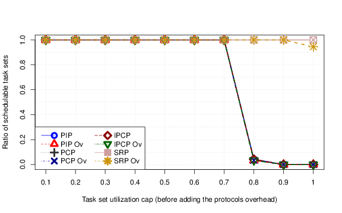

This page presents the data from our evaluation of semphore overheads on taskset schedulability. This page allows one to conveniently view results for all the configurations.
The entirety of the data, and the corresponding graphs, can be downloaded in their entirety here.
For details, please refer to our paper On the Design and Implementation of Uniprocessor Real-Time Resource Access Protocols, submitted to SBESC2016.
Usage: Change taskset parameters using the drop-down controls. The graph should update accordingly.
|
|
 |